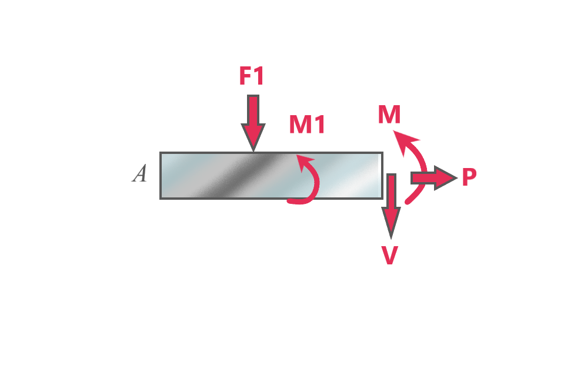

The addition of a point moment does not alter the P and V diagrams but it does change the bending moment diagram.
While taking the cuts, some sections have the point moment in them and these point moments are taken
into consideration while applying the Mz = 0 formula

For example, for the given (left) section :
- Fx = 0 => P = 0
- Fy = 0 => - F1 - V = 0 => V = -F1
- Mz = 0 => +M1 + M = 0 => M = -M1